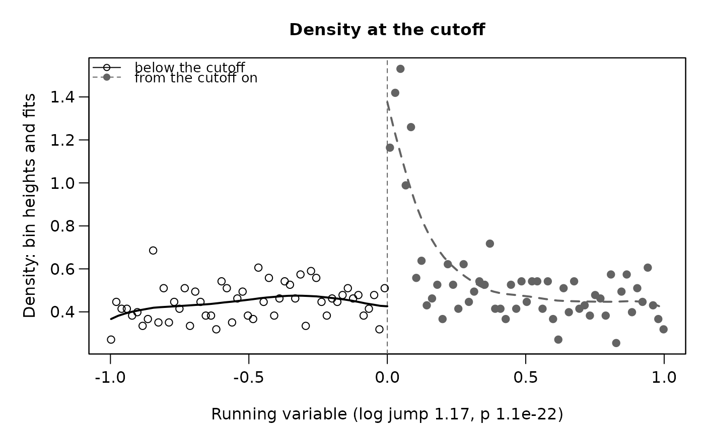

Tests whether the density of a running variable jumps at the cutoff, which manipulation of the running variable would cause, by the two-step estimator of McCrary (2008): a finely binned histogram, then local-linear smoothing of the bin heights on each side with the triangle kernel.
Arguments
- r
The running variable (numbers).
- cut
The cutoff.
- b
NULL(the rule above) or the binsize.- h
NULL(the rule above) or the bandwidth.- level
The confidence level.
- x
An object of class
rddens.- ...
Not used by
print()andsummary(); forplot(), passed to the base-graphics call.- object
An object of class
rddens.- main
NULL(a default title) or one string.- col
NULL(the palette) or colours.- pal
NULL(the session palette, seeplotopt()) or a palette name forblpal().
Value
An object of class rddens, a list: tab, one row (theta,
se, stat, p, lo, hi, fl, fr, the densities left and
right); b, h, nbin, n, cut, level. summary() returns
tab.
The attribute "plt" of the result holds what plot() draws:
bins, the first-step histogram (x the bin midpoint, y the
height, side), and fit, the local-linear smooth of the heights on
each side at 40 points up to the cutoff (x, y, side), whose
values at the cutoff are fl and fr.
Details
The steps, as the paper states them. The bins: g(R) = floor((R - c) / b) b + b / 2 + c (equation 2, p. 702), so no bin straddles the cutoff,
on a grid of width b over the support, each height the share of the
rows in the bin over b; the binsize b by default 2 s n^(-1/2)
with s the standard deviation of the running variable (p. 705, step
1). The bandwidth h by default: a quartic in the bin midpoints on
each side, 3.348 (s2 (b - a) / sum f''(X_j)^2)^(1/5) with s2 the
quartic's mean squared error and b - a the side's length, averaged
over the two sides (p. 705, step 2; the paper calls it a guide for
subjective choice and halves it to undersmooth in its simulations, p.
702-703). The estimate: theta = ln f+ - ln f- from the two local-linear
intercepts, with the standard error sqrt((1 / (n h)) (24 / 5) (1 / f+ + 1 / f-)) (equation 5); the test uses the normal.
plot() draws the bin heights and the smooth of each side,
the log jump and its p-value in the axis title, and returns a list of
what it drew (bins, fit).
References
McCrary, J. (2008). Manipulation of the running variable in the regression discontinuity design: a density test. Journal of Econometrics, 142(2), 698-714. doi:10.1016/j.jeconom.2007.05.005
Examples
set.seed(6)
rddens(runif(3000, -1, 1))
#> rddens: McCrary density test at 0, 3000 rows, binsize 0.02105, bandwidth 0.484
#> theta se stat p lo hi fl fr
#> -0.06265 0.115 -0.5447 0.586 -0.2881 0.1628 0.516 0.4846
# bunching just above the cutoff
r <- rddens(c(runif(3000, -1, 1), runif(300, 0, 0.1)))
r
#> rddens: McCrary density test at 0, 3300 rows, binsize 0.01901, bandwidth 0.3126
#> theta se stat p lo hi fl fr
#> 1.173 0.1196 9.805 1.073e-22 0.9383 1.407 0.4259 1.376
plot(r)
